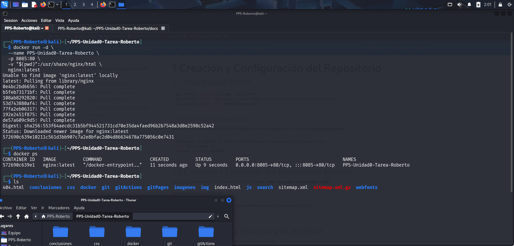

4 Creación de un Contenedor NGINX con Docker
4.1 Preparación de los archivos
Antes de crear el contenedor, es necesario cambiar a la rama gh-pages del repositorio:
cd PPS-Unidad0-Tarea-RobertoMN
git checkout gh-pages
4.2 Creación del contenedor docker
docker run -d \
--name PPSUnidad0-Tarea_RobertoMN \
-p 8085:80 \
-v $(pwd):/usr/share/nginx/html \
nginx
Explicación breve:
- -d → Ejecuta el contenedor en segundo plano.
- --name → Asigna un nombre al contenedor para identificarlo fácilmente.
- -p 8085:80 → Mapea el puerto 80 del contenedor al 8085 de tu máquina.
- -v $(pwd):/usr/share/nginx/html → Monta el directorio actual (gh-pages) dentro del contenedor.
- nginx → Imagen oficial de NGINX de Docker Hub.

IMPORTANTE Si no funciona:
1. Eliminar cualquier contenedor antiguo
docker ps -a
docker stop PPSUnidad0
docker rm PPSUnidad0
2. Eliminar cualquier imagen antigua
docker images
docker rmi <ID_DE_LA_IMAGEN_NGINX_QUE_USASTE>
3. Limpiar caché de Docker
docker volume prune
4. Asegúrate de que tu carpeta gh-pages local está ACTUALIZADA
git fetch --all
git checkout gh-pages
git pull
git fetch --all
git checkout gh-pages
git reset --hard origin/gh-pages
4.3 Visualización de la página qeb
http://localhost:8085